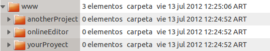

Created: July 2012
By: TexoLab
Email: texolab@gmail.com
Thank you for purchasing my application. If you have any questions that are beyond the scope of this help file, please feel free to email via my user page contact form here. Thanks so much!
Online editor is a Web-based IDE to edit php, javascript, html, css, xml or even plain text files.
To start, you need to upload the onlineEditor folder to your document root (www folder or public_html)

As you can see in the image, the onlineEditor folder needs to be right next to your other projects folders.
Notice that all files under /browser folder needs to have write permission in order to save files.
The configuration is very easy. All you need (or want) to change is in config.php file in the root folder of onlineEditor. Here you can find the next content.
$username = "admin"; //CHANGEME
$pass = "admin"; //CHANGEME
$folder = ""; // Example yourProjectFolder/
$defaultTheme = "ambiance" //See themes names in the configuration button
To change the username and password you need to change the string "admin" for whatever you want to put. For example:
$username = "john";
$pass = "doe";
$folder = "";
$defaultTheme = "ambiance";
To set 'john' for username and 'doe' for password.
You can also choose one folder under your root folder to work. For example, if you want to work in the folder 'anotherProject' (seen in img1) you can set:
$username = "admin";
$pass = "admin";
$folder = "anotherProject/";
$defaultTheme = "ambiance";
and the file browser will now start in anotherProject/ folder. Don't forget to add the '/' at the end of the folder name. You can also set a path to your projects folder like 'oldProjects/someProjects/'.
The theme property is used to change the code editor style. When you change it, it's saved in the local storage of your browser. To change the default theme, just change the 'defaultTheme' property. The posibles names of the themes are:
ambiance, default, blackboard, cobalt, elegant, eclipse, erlang-dark, lesser-dark, neat, monokai, night, rubyblue, vibrant-ink, xq-darkConfiguration: In the configuration menu you can first see the autosave function. If this option is selected, the current opened file is saved automatically when you change it. Second, you can change the code editor theme, just clicking on one. This options are saved in the local storage of your current browser. Notice that when you change your browser, this options are setted default.
Browser:To hide or show the file tree
Reload tree:To reload the file browser
Delete: To delete a current selected file in the browser
New To create a new file in the folder selected in the browser
Save To save the current tab
Search and replace in code editor:
Ctrl-F / Cmd-F:
Start searching
Ctrl-G / Cmd-G:
Find next
Shift-Ctrl-G / Shift-Cmd-G:
Find previous
Shift-Ctrl-F / Cmd-Option-F:
Replace
Shift-Ctrl-R / Shift-Cmd-Option-F:
Replace all
This application imports three Javascript projects.
Once again, thank you so much for purchasing this application. As I said at the beginning, I'd be glad to help you if you have any questions relating to this application. No guarantees, but I'll do my best to assist. If you have a more general question relating to the themes on ThemeForest, you might consider visiting the forums and asking your question in the "Item Discussion" section.
texoLab